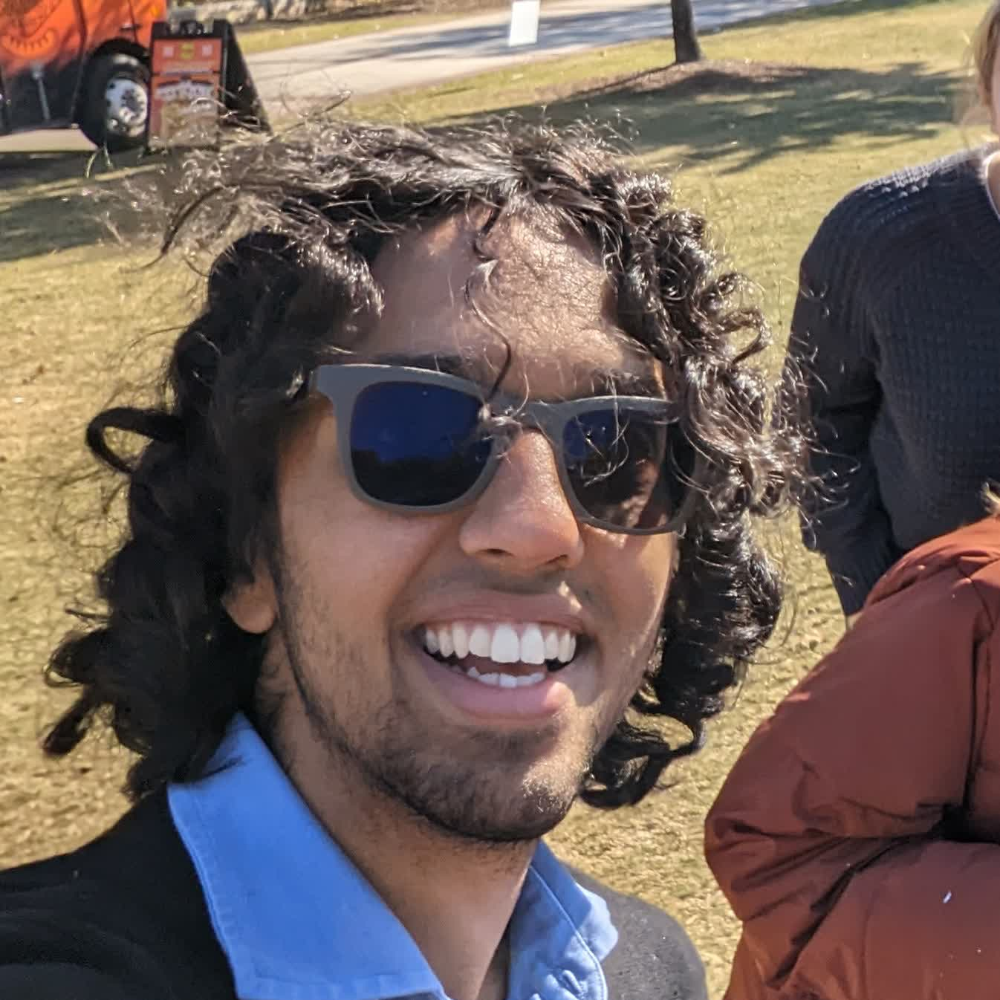

My name is Shranav Palakurthi, and I’m a first-year computer engineering major at Georgia Tech.
I spent the majority of my childhood in Memphis, Tennessee, where I developed a passion for embedded electronics after over six years in FIRST Robotics. I taught myself multiple programming languages, as well as basic electrical engineering skills with the help of YouTube, GitHub, and other sources of free knowledge.
I am passionate about Right to Repair, as well as improving urban density and walkability. Eventually, I want to found a micromobility business to accelerate humanity’s transition to alternative transportation, which I believe is critical to reduce global CO2 emissions to lessen the impact of climate change.
Want to get in touch?This is my email.